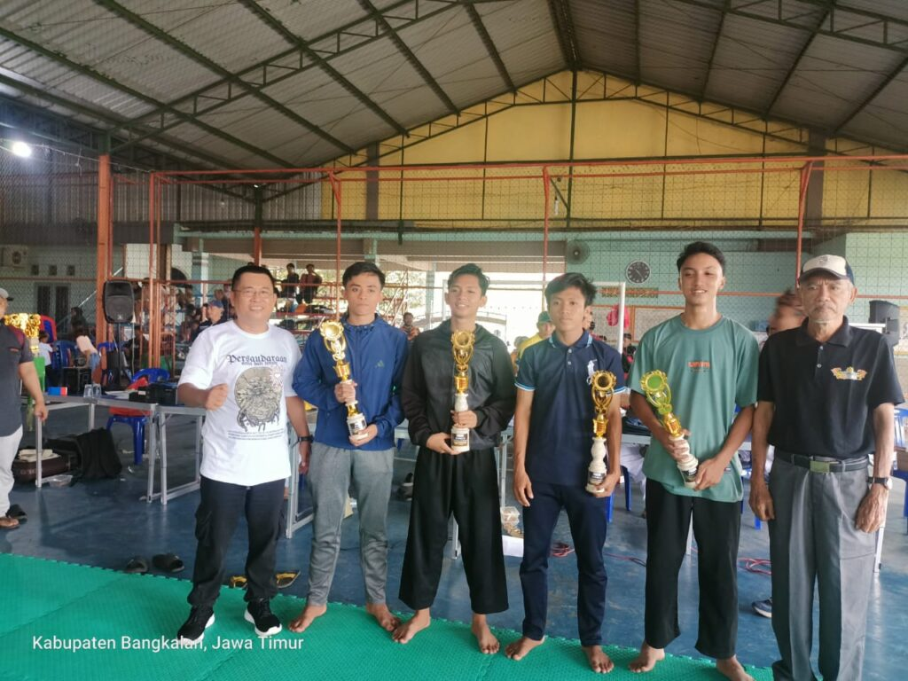

SMKN 2 Bangkalan kembali menunjukkan tajinya dalam bidang olahraga, khususnya seni bela diri pencak silat. Dalam ajang Kejuaraan Pencak Silat Piala Ketua IPSI Bangkalan II Tahun 2024, yang diselenggarakan oleh Ikatan Pencak Silat Indonesia (IPSI) Kabupaten Bangkalan pada 14-15 Desember 2024, para siswa berhasil meraih prestasi membanggakan.
Berikut daftar atlet muda SMKN 2 Bangkalan yang sukses menorehkan prestasi:
1. Zainul Haq Prianto (Kelas X OTO 1) – Juara 2 Kategori Tunggal Putra
2. M. Ahnaf Putera Yusida (Kelas X OTO 1) – Juara 3 Kategori Tanding Kelas C Putra
3. Riman Rachman (Kelas XI TKR 2) – Juara 3 Kategori Tanding Kelas B Putra
Ajang bergengsi ini diikuti oleh berbagai peserta dari sekolah-sekolah serta perguruan pencak silat se-Kabupaten Bangkalan. Prestasi ini membuktikan bahwa siswa SMKN 2 Bangkalan memiliki dedikasi tinggi dan semangat juang yang luar biasa dalam setiap pertandingan.
Dengan semangat juang yang tinggi dan latihan yang konsisten, para atlet muda SMKN 2 Bangkalan diharapkan mampu terus membawa nama baik sekolah di tingkat yang lebih tinggi. Prestasi ini menjadi bukti nyata bahwa SMKN 2 Bangkalan tidak hanya unggul dalam pendidikan vokasi, tetapi juga mampu mencetak atlet-atlet berbakat dan berprestasi.
Selamat kepada Zainul Haq Prianto, M. Ahnaf Putera Yusida, dan Riman Rachman atas pencapaian luar biasa ini! Teruslah berlatih dan berprestasi. SMKN 2 Bangkalan Hebat, Berprestasi, dan Juara!